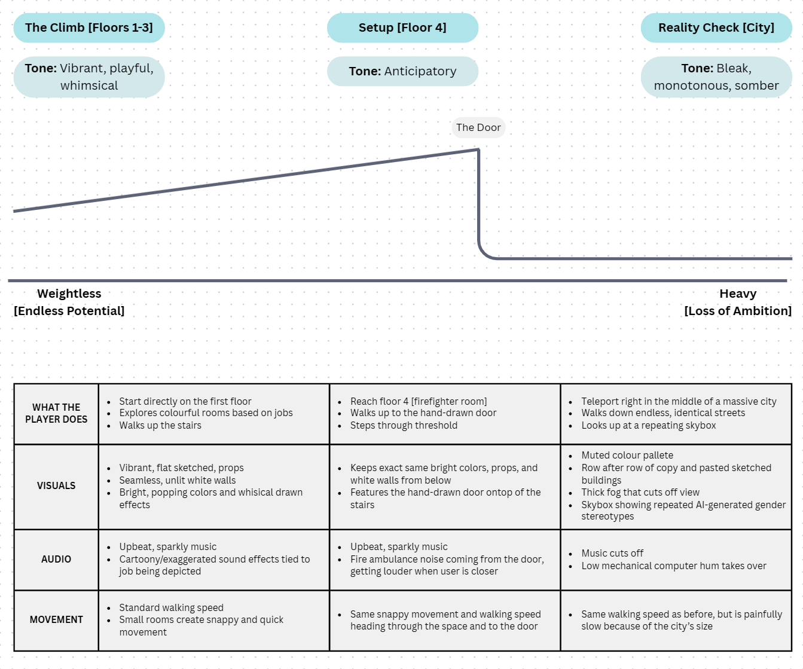
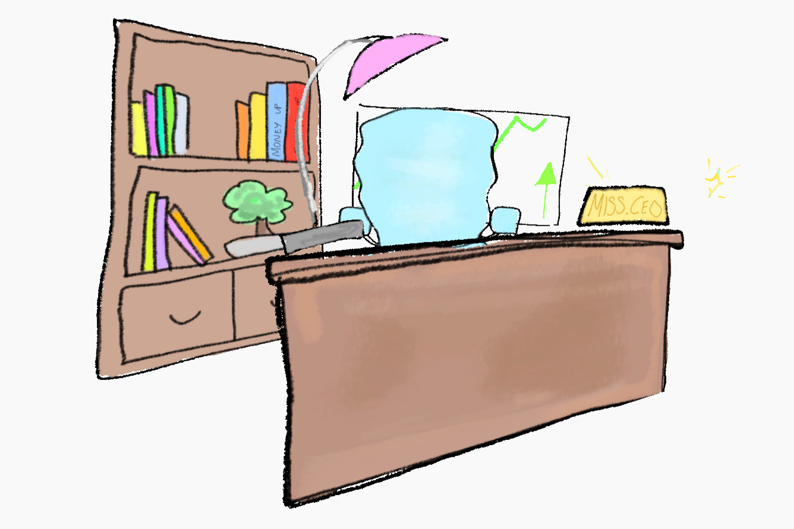
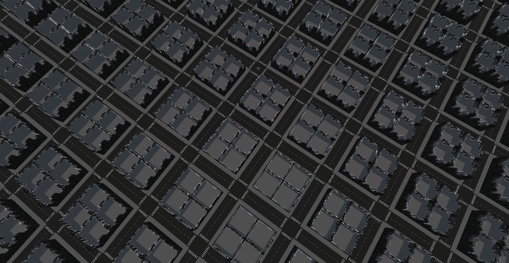
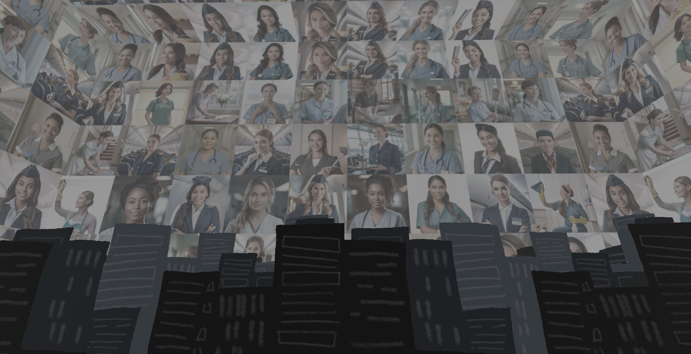

An Immersive 3D environment exploring how biased AI-generated content can influence children’s ambitions through gendered representation.
Made with: Unity • Clip Studio Paint • Photoshop • ChatGPT • C#
Overview
Reach Up for the Sky turns the systemic issue of artificial intelligence bias into a space-driven narrative. Experienced through the lens of a young girl, the user climbs a vibrant, stylized tower exploring potential career paths, only to step through a threshold into a bleak, repeating city. The project critiques how the early accessibility of AI content can prematurely restrict a child's worldview, communicating a transition from open-minded potential to a rigid algorithmic loop.

A Blank Canvas
To capture the perspective of a child, the experience begins inside a simple tower rendered with a white, unlit shader. Flattening the geometry and erasing visible edges mimics a child's mind as a blank canvas, being an open, boundless world representing an unrestricted potential to learn and dream.
The rooms within the tower depict romanticized workspaces. Rather than using 3D assets, everything was drawn as 2D flats to evoke a childlike imagination. Bright colors, playful particle effects, and comical sound effects reinforce the way children romanticize adulthood, focusing entirely on the positives before real-world limits are introduced.



The Threshold
Audio acts as the narrative anchor that destabilizes the user's comfort. Throughout the tower climb, a bright, repetitive, and sparkly background music track lifts the mood.
However, upon reaching the fourth floor, the firefighter room, this whimsical atmosphere peaks with a twist. Instead of the sound effects emitting from local props, a fire ambulance siren blares directly from a hand-drawn door. Growing aggressively louder as the user approaches, the audio acts as a thematic warning, using a real-world emergency sound to foreshadow the bias waiting on the other side.
Reality Check
Stepping through the door teleports the user to the ground level of a massive city. The upbeat music and urgent sirens immediately cut to dead silence, replaced by the hollow, mechanical hum of an overheating computer. This quiet, stagnant sound establishes the final phase as empty and devoid of the human spirit.
Architecturally, the city is built from a boxy, rigid block made of dull flats, duplicated and lined up with its clones. This aggressive repetition creates a deep sense of unnatural discomfort. The hallway-like perspective and thick fog induce a feeling of hopelessness, discouraging exploration and forcing the user's focus up towards the skybox.

A Sky So Limiting
The true climax of the space is the skybox, which features an overwhelming, digital collage of women pigeonholed into stereotypical fields. Repeated six times to wrap the entire boundary of the environment, this mosaic locks the user beneath a literal ceiling of systemic data bias.
By keeping the player's walking speed identical to the tower phase, traversing the massive, cloned city blocks becomes intentionally strenuous and painfully slow. The boundless potential of the childhood tower is systematically crushed by a rigid grid, physically embodying the claustrophobia of a world shaped by algorithmic bias.

